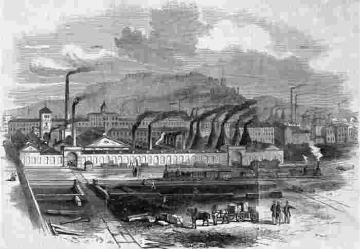

资本主义改变了世界，与此同时，资本主义自身也发生了变革。我们现在正处于资本主义发展的一个特定阶段，它始于20世纪70年代和80年代发生的变革。不过，要想明白我们现在身处何方，我们就必须将这个新时代放回到历史背景下。撒切尔主义代表着当前时代的核心思想，它致力于反拨之前数百年的发展趋势，恢复维多利亚时代资本主义的价值观与活力。
本章将工业资本主义的发展划分为三个阶段，并加以讨论。对于所划分的阶段以及各个阶段的称谓，读者不必过于较真。它们只是一种便利的方法，用来显示不同时期的特征以及主要特征之间的关联。这些阶段的划分参照了英国历史，因为英国最早出现工业资本主义制度，并且一直以来都是资本主义社会的重要思想及制度的主要源泉。下一章将考察资本主义发展过程中的国际间差异。
这一阶段包括整个18世纪及19世纪早期，当时工业资本主义获得了大发展。这一时期缺乏秩序，因为无论是组织起来的劳动力还是国家政府，对于资本主义企业家的经营活动都没能加以控制。小型工厂和手工作坊之间陷入激烈竞争，而劳动力则处于流动状态，拥入新的工业城市并参与其建设，建设了运河、道路、铁路，从而使货物及人员的大规模运输成为可能。
如第二章所示，从资本主义生产的早期阶段开始，手工匠人一直试图组建协会，以获取集体性的力量。雇主的敌视态度、竞争的压力、不稳定的就业和大部分生产单位的小规模生产，使得工人们很难组织起来，但他们并没有因此放弃努力。在19世纪早期，工人们雄心勃勃地进行了多次尝试，想要建立全体工人的大联盟。1830年，全国工人保护协会成立，1834年，全国团结工会联盟成立，不过两者存在时间都不长。当时，能存活下去的工会组织是由那些熟练工人组成的联盟，他们能够控制行业的准入资格，不会被轻易取代。
国家政府一度开始规范工厂的工作条件。试图对童工的工作时间加以限制的做法可以追溯到18世纪，1802年颁布的《学徒健康与道德法案》最早成功地进行了此类尝试，不过直到1833年，首部对此做出限定的有效法规《工厂法》才获准通过。虽然一部分改革者是出于人道主义关怀才提出此类法案，但法案本身并非仅仅针对剥削，它还关注工厂中所雇用的妇女和儿童的道德状况以及传统家庭关系的维系。不管怎样，对于工厂的管制越来越多，这一点被频繁提及之后，给人以某种错觉，即国家在当时的经济中起到了重要作用。事实上，当时经济生活的一些重要方面都脱离了政府管制。
国家对于学徒制、工资水平和食品价格的管理机制建立于16世纪，于1815年被废除。国际贸易摆脱国家管制的过程更漫长，但到19世纪60年代也已取得成功。其中关键一步在于1846年废除了谷物的进口关税。解除管制有利于工业资本家，他们想要摆脱国家干涉，自由开展经济活动。他们希望工资水平由劳动力市场，而不是由国家来决定。他们还希望开展自由贸易，部分原因在于支持出口，但另一部分原因则在于廉价的进口食物使他们能够支付更低的工资。
解除管制的做法与当时兴起的自由主义思想相呼应。自由主义思想提倡个人自由以及市场的自主运行，但这并不意味着国家完全放弃管制。事实正好相反，只有在一个秩序井然的社会中，市场力量才能自由操作，而社会秩序的稳定需要加强国家力量，因为当时的工业资本主义正造成巨大的混乱。罢工、暴动、破坏机器以及侵犯他人财产权等行为威胁着生产与社会秩序，而工会和激进政治运动直接挑战了资本主义雇主和国家的权威。政府动用武力来镇压暴动和示威，有时还采取极端的暴力手段。
在当时几乎没有任何国家福利。无法生存的穷人数量日渐增多，这成为令人担忧的现象。但是，当时人们担忧的并不是这些穷人的福利，而是担心他们将成为当地社区的负担。这些穷人被迫工作，1834年的《济贫法修正案》引入了新的救济体系，迫使穷人劳动。原有的“户外救济”措施被废除，创建了新的室内救济体系。只有那些进入“劳动救济所”的人才能得到救助。那里的条件被刻意设置得很糟糕，甚至比当时的工人最低薪酬还要差，只有那些无法正常工作的人才会进入“劳动救济所”。这一法规在穷人中激起了极大的仇视，在实际做法中，原有的户外救济体系很大程度上依然被保留，但是1834年的法案很好地说明了在无序型资本主义时期国家对于穷人的态度。
在资本主义发展的这个阶段，竞争激烈的小规模制造、力量单薄的工人组织、经济管制的解除、强势的国家政府、最低程度的国家福利等现象相互作用，成为本阶段的主要特征。本阶段尤为典型的思想是自由主义关于个人自由的信念，这一思想的历史意义不仅限于当时。自由主义作为一整套有影响力的思想一直延续下来，后来又改头换面，衍生出“新自由主义”思想与政策，在资本发展的当前阶段产生了重大影响。
资本主义的下一阶段从19世纪后半叶开始，到20世纪70年代达到顶峰。在这一阶段，竞争与市场管制出现衰退，因为劳资双方都变得更富组织性，并且国家的管理与控制也得到了加强。国际冲突在其中也起到一定作用，因为各国政府一方面试图保护国民经济不受日渐激烈的国际竞争影响，另一方面则更为有效地管理和利用本国资源以应对竞争对手的挑战。
阶级组织是本阶段发展的驱动力之一。19世纪中期之后经济增长更为稳定，大型生产单位出现，更强大的工会组织形成，这些因素为全国性工人运动的最终出现和生存提供了条件。雇主们也变得更富组织性。19世纪后半叶，随着产业层面上雇主们取得联合，他们也组建了自己的联合会，一方面对抗工会日渐强大的势力，另一方面也试图减少无序竞争带来的不确定性。
但是，雇主们减少不确定性的主要办法并不是通过雇主联合会，而是通过集中。对付竞争最简单的办法是大量买入或者兼并。在英国，这一过程一直持续到19世纪末期，到了20世纪20年代又出现一股新的兼并浪潮，典型案例就是1926年成立的帝国化学工业公司，该公司由四家化学公司合并而成，而这四家公司原本就是之前兼并的产物。资本主义组织形式的主要趋势之一就是集中化程度日益加强，这一趋势至今没有任何停止的迹象。

图6设菲尔德市，赛克洛普斯钢铁厂，1853年：大型企业集中生产，也便于工人们组织起来
随着公司规模变得越来越大，公司的管理职能变得日渐繁杂，随之出现更多的管理岗位和协会。如今有学者声称，一场“管理革命”正在改变工业资本主义的特征。他们认为，管理职能的发展，连同股份制的扩展（许多股东只拥有少量股份，权力很小），意味着现在是经理而不是股东在控制着公司。经理不再仅仅试图将利润最大化，而是将公司所有投资者的利益考虑在内。“管理革命”的说法看似有理，其实却夸大了经理们的权力，因为股东掌控着公司，并且利润率依然是“最重要的因素”。不过和从前相比，工业生产过程的管理毫无疑问变得更加有序。事实上，阿尔弗雷德·钱德勒曾令人信服地指出，20世纪美国公司的优势正是源自美国式管理的“组织能力”。从这个意义上讲，资本主义变得越来越“管理有序”了。
随着政府更多地介入阶级关系管理以应对阶级组织，资本主义在其他方面也变得更加管理有序。政府从镇压工人抗议变为吸纳工人阶级并代表工人阶级，来对他们加以管理。在政治领域内，吸纳工人的策略所采取的形式是扩大选举权，这在1867年表现得更为突出；随后各大政党为了争夺工人手中的选票又展开竞争，这一做法导致工党直到20世纪才最终诞生。1906年，工党才正式成立，而在欧洲的其他国家，同类政党早就出现。在工业领域内，19世纪70年代，工会获得了一定的法律保护，尽管当时雇主们偶尔还是会通过法律途径控告工会。直到1906年《劳资纠纷法》颁布，工会才获权免于被民事起诉。
国家政府也更多地负起责任，更加关注民众的福利。这一过程始于19世纪中期的公共健康措施，但直到一战之前的十年，现代福利国家的雏形才开始出现，国家提供了养老金、失业救济、伤残救助、哺乳期福利、重病救助、免费医疗等一系列福利制度。20世纪40年代，随着免费中学教育的开展、国民医疗保健服务体制的创立、提供全面保障的各项救助的进一步扩展，福利国家的建设就此完成。就业对于福利而言至关重要，20世纪30年代大萧条的经历使得维持“充分就业”成为战后英国历届政府的首要政务之一。
不仅教育和医疗脱离了市场，其他重要的工业和服务也是如此。这一过程始于19世纪最后25年地方性的“市政社会主义”运动，它将煤气和水的供应收归国有，并且提供了公共所有的城市交通。1890年颁布的法律给予市政议会建造房屋的权力，由此开始了政府提供住房的做法。电话公司的公有化开始于1892年。随后在20世纪，电力、广播、民航、铁路、采矿以及数不胜数的其他工业都由政府创立或者接管。上述“国有化”举措，大部分并非出于赞同公共所有权的好处的社会主义思想，而是出于民族主义思想：一方面认为关键服务行业的所有权理应公有，另一方面则担心部分严重分裂或落后的行业效率低下，无法实现自身的现代化。
在上述过程中，对工人阶级的政治吸纳、工党的兴起以及社会主义思想很显然扮演了重要角色，但国际冲突也是驱动力之一。国家福利的突飞猛进发生在一战之前的十年，它所反映的不仅是政府对工人阶级的政治吸纳，还有对布尔战争期间英国士兵糟糕的身体状况的忧虑，以及对德国国家福利迅猛发展的了解。一战造成国家对经济的大面积管制，尽管随后这些管制又被解除，但战时的这一做法为后来国有制的扩展提供了重要先例。一战也推动了阶级组织的大发展，工会和雇主都首次发展出了中央集权化的全国性组织，以便影响政府的决策，后者已经全面参与到经济管理活动之中。
在20世纪上半叶的国际冲突背后隐藏着帝国间的争斗，它催生了管控型资本主义的许多特征，但帝国与管控型资本主义的关系并不仅限于此。在工业资本主义从英国扩散到其他国家之后，国际竞争日渐加剧，自由贸易最终被保护主义所取代，20世纪30年代，保护主义政策达到巅峰。通过建立一个帝国，并且将它与经济对手隔离开来，可以保护市场，并且维持原材料的廉价供应。保护还使雇主得以与工会达成妥协，在面临来自拥有更高生产率或更低工资水平的其他国家的竞争时，如果没有国家保护，劳资双方间的妥协不可能达成。
关于这个论题，有两点必须澄清。首先，我并没有认为帝国的建立仅仅是出于经济原因，我的观点是，帝国使得基于阶级组织和阶级妥协的管控型资本主义的发展成为可能，尤其是在英国。其次，我所说的帝国，不仅意味着在帝国政府治下的殖民领土，还包括英国公司及金融资本所主宰的地区。事实上，英国在经济上从它在拉美各国的投资中获益更多，那些国家不是英国的殖民地，但却受到英国金融资本的控制。
二战后的二十多年里，管控型资本主义达到巅峰。在20世纪40年代，福利国家完全建立，国有化的最后一次浪潮出现，尽管到20世纪70年代的时候，还有一些病入膏肓的公司被收归国有。公共住房的规模不断扩大，到1979年的最高点时，竟有1/3的英国家庭住在公共住房里。20世纪六七十年代的政府与工会和雇主进行协商，听取他们对政府政策的意见，作为交换，他们在执行政策时需要予以配合。通过这一办法，政府尝试管控价格和收入。政府还设法采取反周期性政策以维持就业率。平等问题在政治上很受关注，尤其是与教育、税收、福利相关的平等问题。
无序型资本主义明显的缺陷和激烈的冲突催生了特征鲜明、自成一体的“管控型资本主义”，后者在组织、制度及意识形态方面与前者形成鲜明对比。资本主义第二个阶段的形成得益于大型企业的成长、阶级组织的发展、政府与阶级组织间的统合关系、政府的介入与管制、国家福利以及公共产权的扩展，这些过程紧密关联并相互作用。它们的共同点在于降低市场关系在民众生活中的重要性，这反映出人们普遍反对市场力量所造成的趋利忘义的负面影响，正是此种负面作用在资本主义突破发展时期对民众生活产生了日渐重要的影响。不过，资本主义自身的发展并不足以解释管控型资本主义的发展。当时的国内和国际环境允许并协助这些过程的发展，因为在这一阶段资本主义是在民族帝国内部组织起来的。
20世纪60年代，福利国家、政府与主要利益组织间的统合关系以及普遍的公共产权成为英国社会为人所熟知的特征。管控型资本主义的结构与价值观已经发展了至少一个世纪，看起来还将在可预见的将来继续发展。当然，管控型资本主义也有批评者，来自右派和左派的批评都有，但在60年代末之前，它一直没有遭到主流政治人物的严肃拷问。然而，到了70年代，管控型资本主义制度崩溃，80年代，一种以市场力量复兴为核心的新的政治理念对于国家政策产生了重大影响。
为什么管控型资本主义制度会崩溃？原因之一在于它所采取的统合制度最终没能奏效。政府试图管控价格和收入，但却一再失败，因为它们需要工会、雇主和政府各方通力合作，但这种合作的尝试要么迟迟未能实现，要么难以操控。当政府采取更为强硬的胁迫政策时，它们遭遇到了无法战胜的联合抵抗，此种抵抗对于政府自身而言可能是致命的。1974年，保守党政府无力应对矿工反抗政府收入政策的大罢工，这直接导致了保守党在选举中的失败。1979年，工党在经历了一个“不满的冬季”后，在大选中失败，当时它提出的收入政策在一波公共事业罢工后难以为继。
当时有论者提出，管控型资本主义遭遇失败，原因在于英国工业关系在组织形式上的特殊缺陷。考虑到英国的工会和雇主的组织形式都缺乏中央集权，处于无序状态，这种说法颇有道理。工会和雇主组织的结构形成于19世纪，并没有适应经济与社会变迁。而且，统合制度看起来在瑞典运行顺畅，因为那里有中央集权程度更高的、对称的、起作用的结构，不过如下一章所示，到了20世纪70年代，瑞典的制度同样遭遇到困境。除了英国制度的无序本质之外，管控型资本主义还存在其他问题。
真正的问题在于日渐激烈的国际竞争向旧工业社会施加了越来越大的压力，20世纪70年代的经济危机又加剧了这一压力，对此我们将在第六章进行分析。雇主们做出的反应是减少劳动力成本，这意味着降低工资、裁员、提高生产率，所有这些举措都不受工人欢迎，遭到了工会的抵制。随着管控型资本主义的发展，工会会员人数增加，权力也加大，从而处于强势地位，敢于抵制在他们看来与工会成员利益相违背的变革。
旧工业社会的管控型资本主义制度使得这些社会能应对工业资本主义所产生的许多问题，并在资本所有者和劳动组织之间达成切实可行的妥协政策。但正如上文所述，管控型资本主义发展的条件之一是国民经济与国际竞争相隔绝。随着帝国的衰落和自由贸易的发展，国家间的隔绝难以继续。国际竞争加剧，管控型资本主义制度承受着无法应对的压力。
在价值观和工作重心方面也发生了更大范围的改变，这一变化显示出对于管控型资本主义的普遍反对。有迹象表明，对高税收的反抗日渐增多，对于依靠税收提供资金支持的公共服务所摆出的“爱用不用”的态度，不满情绪也日渐滋生。这些服务并没有提供消费者所期待的选择或快速积极的反应。尽管在20世纪70年代失业率一直增长，但民众更为关心税收和物价，而不是工作。原本对于福利、平等、就业等管控型资本主义制度核心价值观的集体关注让位于更具个性化的自由和选择。
这些变化不仅部分解释了管控型资本主义的衰落，而且也有助于说明资本主义在20世纪80年代的转型方向。管控型资本主义同时遭到左派和右派的批评，但在80年代，右翼的选择最终占据上风。信奉个人自由和市场自由运作的“新自由主义”思想主导了当时的意识形态和政策。新自由主义试图反拨管控型资本主义的方向，引导英国社会恢复资本主义早期的活力。70年代，新右派的领袖基思·约瑟夫提出了新自由主义的主要思想，随后在80年代，撒切尔政府将这些思想付诸实践，90年代的新工党也跟着采纳了这些思想。
在保守党于1979年大选获胜之后，凯恩斯主义——通过政府对经济的管控和公共支出维持高就业率——连同统合主义策略宣告终结。很明显，政府的侧重点从维持高就业率转向了控制通胀。政府不再就政策向全国性的工会组织和雇主联合会咨询，劳资双方的代表发现他们被排除在国家机构之外。右翼政府将工会代表排除在外，置之不理，这毫不奇怪。但是令全国性雇主联合组织英国工业联合会的总理事感到震惊的是，当他在1980年见到撒切尔夫人时，他同样遭到了冷遇。对于统合关系的拒绝切断了劳资双方与政府的紧密联系。
通过以多种办法“让国家势力回退”，市场的力量得以复兴。通过限制福利支付（尤其是失业救济的支付）、用贷款取代直接拨款（例如教育开支）、增加收费等方法，福利支出得到削减。尽管如此，国家开支在总体上没有减少，因为失业人数增加带来了更多的社保开支。税收在总体上也没有削减，而是从收入税转为间接税，这一转变据称至少给予了民众更多的选择，因为他们可以不购买带有这些税种的商品。
公共事业与服务通过各种形式的私有化回归市场。最简单的形式是将公共企业出售给私人。根据叶金和史坦尼斯洛的统计，截至1992年，2/3的国有行业，共计46家主要机构，近90万名员工，都以这种方式被出售。公共住房也大规模被出售，政府立法授予住户购买所居住房产的权利。另一种私有化的形式是“强制竞争性报价”。这一做法要求公共机构就其所提供的服务接受私人报价，并将合同给予最具竞争力的报价者。以1983年为例，所有的地区医疗部门被要求引入竞争性报价机制来提供清洁、洗衣、饮食等服务。原有的“内部”供应方可能赢得合同，但要想获胜，它必须表现得像是一家私人公司。
其他公共事业无法按照这些方式轻易转为私有。但是，它们可以被要求表现得像是在市场上进行竞争。因此，虽然医疗和教育行业的彻底私有化在政治上无法做到，但是医疗和教育领域内部市场的形成迫使中小学、高校、医院等相互竞争。与此同时，医疗和教育领域（还包括养老保险）的私人机构得到了资金支持和鼓励。整体而言，监狱并没有私有化，但是在20世纪90年代，一些监狱接受私人管理，因此在公共管理和私人管理之间产生了竞争关系。
市场力量复兴的另一途径是去除或减少政府对经济活动的管控。去除管控也有多种形式，比如解除对周日交易的限制、放松计划管控和减少对商业电视的管控。这些措施或许对于金融业影响最大。
过去，金融业的惯例是不同的机构各自管理自己的领域，并维持不同领域的界限。以购房互助机构与银行为例，两者都经营贷款业务，但传统上两者在不同的市场上各自经营，相互并不存在竞争关系。金融功能的界限和行业的界限一样，与新自由主义关于竞争最大化的思想相冲突，尽管在国际竞争的压力下，原有的金融体系正在逐渐解体。伦敦的金融机构正在与纽约等其他金融中心争夺资本。国际间障碍的消除，尤其是1979年汇率管制的废除，使得外国银行有了更多在伦敦开展业务的自由，英国银行同样也有更多到国外经营的自由，这些做法加剧了金融业的竞争压力。我们在第一章曾提到的巴林银行试图利用金融自由进行投资，却造成了灾难性后果。
但必须强调，尽管解除管控的变化确实发生了，却并不存在整体上的解控过程。安德鲁·甘贝尔曾强调，自由经济需要强势政府。市场力量的复兴事实上增加了政府管控。撒切尔夫人执政时代的众多例子足以证明这一点。
如果政府垄断只是被转成私人垄断或者私人公司被允许操纵市场，那么仅仅靠私有化不足以激励市场竞争，因此政府组建了一系列新的管制“办公室”，如燃气办公室、电信办公室和水务办公室等，以管制天然气、电信和水资源市场。
另一方面，工会被认为妨碍了劳动力市场的自由运作，因此被迫接受了前所未有的法律管控。工会组织在20世纪60年代和70年代挫败了工党和保守党政府的改革企图，但到了80年代，它们被迫屈服。现在对工会组织进行管制的法规规定了惩罚性的制裁措施，某个组织一旦违反，不仅会被罚款，而且会丧失资金来源、办公场地，甚至全部资产。80年代，工会遭受了来自政府的沉重打击，尤其是1984年至1985年的矿工罢工由于政府应对有方而遭到失败。罢工之前，政府增加了煤炭储备，并调拨大批警力以阻挠工会的纠缠策略，将矿工送上了法庭。根据珀西-史密斯和希利亚德的统计，共有超过4，000人遭到起诉，主要罪名为破坏公共秩序。
中央政府也对地方政府加强掌控，从而控制整个政府开支，并迫使地方政府进行服务部门私有化。在教育和医疗领域，新的国家机器建立起来，以改善并监督服务质量，提供行业运行的相关信息。事实上，中央政府对地方政府、教育和医疗部门以及工会的控制力，超过了之前英国和平时期的任何阶段，其实国家势力根本没有“回退”。
所有这一切并不仅仅是保守党政府上台的结果，它反映了资本主义发展的新阶段，工党上台后延续新自由主义政策的做法也说明了这一点。必须承认，工党的政策与撒切尔夫人执政时期有所不同，比如引入最低工资，授予工会组织参与工资谈判的权利，将部分铁路改回国有等。但是，最低工资制度只是设立最低水平，而大多数用来管制工会的法规都被保留，私有化进程继续进行而不是逆转。事实上，工党探索了复杂且新颖的方法，通过公私合营的方式，即吸收私人资本和私人管理进入公共事业，将私有化引入新的领域。因此，私人公司接管了“不合格的”学校，甚至“不合格的”地方教育部门，并对其进行管理。
工党的“国民医疗保健服务”计划很好地说明了它的办事方式。尽管工党对保守党引入的内部市场进行了猛烈抨击，并且据说要废除内部市场，但在工党2002年提出的“国民医疗保健服务”计划中市场机制的作用非常明显。病人的选择处于该计划的核心，病人及其治疗医师将最终选择何时何地进行治疗，他们甚至可以选择私立医院或国外医院。由于资金支持将追随病人，医院将承受争夺病人的压力。计划着重强调通过解除集中化、奖励、“根据结果支付”等办法使病人获得更好的服务。
图7回退：1984年，政府调用警力挫败矿工
但是，所有这一切对于市场机制的依赖并不意味着是市场而不是国家在掌控“国民医疗保健服务”。国家临床技术研究院将确保医院使用最具性价比的治疗方案。全国服务框架体系将设定治疗的标准。医疗审计与监督委员会，号称“超级医疗管制机构”，将监督医疗服务，对医护信任度打分，并且受理投诉。社会护理监督委员会将规范老年人的护理和照顾。所有这一切，连同其他数百个目标，都被列入了政府发布的“国民医疗保健计划”。
新工党早已偏离了以往的社会主义思想，工党价值观的关键变化显示了偏离的幅度。随着新工党远离传统的社会基础（即工会），它从集体主义转向了个人主义。工党热切关注教育及医疗领域内的消费者选择，也说明了这一点。工党还进行了一些再分配调整，尤其是采取了改善贫困儿童状况的措施，但是在20世纪80年代不断增长的收入分配不公现象并没有得到缓解，事实上收入差异进一步加剧。原先的平均主义再分配机制试图借助政府力量将资源从富人转向穷人，但在工党治下，这种再分配机制很大程度上被一种更富个人主义色彩的分配方式所取代，穷人得到更多发挥他们潜力的机会。重要的是，现在探讨不平等时，指的不再是财富或收入差异，而是指准入资格。正如安东尼·吉登斯所说：“新政治将平等界定为包括在内 ，将不平等界定为排除在外 。”
在本章中，我们审视了资本主义的两次转型。关于资本主义，我们能从中学到什么？
第一次转型是从无序型资本主义转变为管控型资本主义，它表明有可能保护民众至少避开市场力量所造成的最糟糕的结果。工作条件可以得到管制，并且工人们可以通过集体组织限制雇主的权力，并协商工资和工作条件的改善。福利成为国家事务，国家将一些关键行业从市场收回，从而使所有公民都得以享受平等服务。政府试图在国家与工会和雇主组织之间达成合作，从而对经济进行管理。资本主义可以得到管制，即使那些尝试这么做的人时常把事情办砸了，他们有时屈服于强大的资本所有者所施加的压力，或者干脆没能兑现他们的承诺。
但是，管控型资本主义所面临的首要问题是，在限制和替换商品及服务的市场供给时，它也在削弱资本主义经济的核心机制。当20世纪70年代国际竞争和经济危机不断加剧，对旧工业社会施加了沉重压力时，管控型资本主义逐渐失去效力。破坏管控型资本主义的另一因素是日渐增长的个人主义，它更强调消费者选择和市场供给。有人呼吁重拾过去时代的价值观和生命力。
第二次转型是市场力量得到复兴，但整个国家并没有“回退”，因为市场机制只有在政府干预和管制的背景下才能运行。事实上，根本不存在某个市场占据统治地位的历史阶段，这样的说法纯属想象，因为在无序型资本主义时期，国家通过维持秩序，在资本主义正常运作过程中起到了关键作用。事实上，在资本主义发展的最新阶段，即重新市场化的资本主义，国家管制大幅度加强已经成为该阶段的典型特征，相比管控型资本主义时期，当前的国家管制范围更广。
重新市场化的资本主义为个人提供了更多选择和更多自由，但也使得生活变得更不确定，工作压力增大，不平等现象加剧。无论是对于消费品、媒体渠道、假日旅游或者学校，不可否认现在有了更多选择。但是，未来变得更为不确定，尤其是民众生活的关键领域，如就业、住房和养老金。生活的不确定性，加上工会组织的弱化，削弱了被雇佣者抗拒雇主的劳动要求的底气，由于日益激烈的竞争以及国家更为严密的管控，雇主要求他们更好地完成更加艰巨的工作。一部分人身陷低工资的职业，面临不确定的未来，一部分人则能够抓住新的机会积聚财富，这两类人之间的差距越来越大。随着管控型资本主义的发展，个人自由曾以换取更多平等的名义被削减，但是在重新市场化的资本主义时期，平等和保障被舍弃了，以换取自由和选择。
尚无迹象显示在不远的将来会发生此类变化，但不能就此认定这就是资本主义发展的最终阶段。如果说此刻市场看起来无懈可击，管控型资本主义在当时也曾是如此。如果说管控型资本主义存在许多弱点和缺陷，重新市场化的资本主义同样如此，因为不平等和不确定性将产生新的缺陷和压力，从而催生变革。而且，正如我们将在第六章中看到的那样，不稳定和一再出现的经济危机一直伴随着资本主义发展的这一最新阶段。重新市场化的资本主义并没有解决资本主义社会的问题。